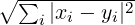
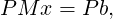
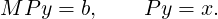

4 Linear Algebra
4.1 Vectors
4.1.1 Overview
The structures and functions related to vectors are declared in pnl/pnl_vector.h.
Vectors are declared for several basic types : double, int, and dcomplex. In the following
declarations, BASE must be replaced by one the previous types and the corresponding vector
structures are respectively named PnlVect, PnlVectInt, PnlVectComplex
typedef struct _PnlVect {
/**
* Must be the first element in order for the object mechanism to work
* properly. This allows any PnlVect pointer to be cast to a PnlObject
*/
PnlObject object;
int size; /*!< size of the vector */
int mem_size; /*!< size of the memory block allocated for array */
double *array; /*!< pointer to store the data */
int owner; /*!< 1 if the object owns its array member, 0 otherwise */
} PnlVect;
typedef struct _PnlVectInt {
/**
* Must be the first element in order for the object mechanism to work
* properly. This allows any PnlVectInt pointer to be cast to a PnlObject
*/
PnlObject object;
int size; /*!< size of the vector */
int mem_size; /*!< size of the memory block allocated for array */
int *array; /*!< pointer to store the data */
int owner; /*!< 1 if the object owns its array member, 0 otherwise */
} PnlVectInt;
typedef struct _PnlVectComplex {
/**
* Must be the first element in order for the object mechanism to work
* properly. This allows any PnlVectComplex pointer to be cast
* to a PnlObject
*/
PnlObject object;
int size; /*!< size of the vector */
int mem_size; /*!< size of the memory block allocated for array */
dcomplex *array; /*!< pointer to store the data */
int owner; /*!< 1 if the object owns its array member, 0 otherwise */
} PnlVectComplex;
size is the size of the vector, array is a pointer containing the data and owner is an integer to know
if the vector owns its array pointer (owner=1) or shares it with another structure (owner=0).
mem_size is the number of elements the vector can hold at most.
4.1.2 Functions
General functions
These functions exist for all types of vector no matter what the basic type is. The following
conventions are used to name functions operating on vectors. Here is the table of prefixes used for
the different basic types.
| type | prefix | BASE |
|
|
|
| double | pnl_vect | double |
|
|
|
| int | pnl_vect_int | int |
|
|
|
| dcomplex | pnl_vect_complex | dcomplex |
In this paragraph, we present the functions operating on PnlVect which exist for all types. To
deduce the prototypes of these functions for other basic types, one must replace pnl_vect and
double according the above table.
Constructors and destructors
There are no special functions to access the size of a vector, instead the field size should be
accessed directly.
- PnlVect * pnl_vect_new ()
Description Create a new PnlVect of size 0.
- PnlVect * pnl_vect_create (int size)
Description Create a new PnlVect pointer.
- PnlVect * pnl_vect_create_from_zero (int size)
Description Create a new PnlVect pointer and sets it to zero.
- PnlVect * pnl_vect_create_from_scalar (int size, double x)
Description Create a new PnlVect pointer and sets all elements t x.
- PnlVect * pnl_vect_create_from_ptr (int size, const double *x)
Description Create a new PnlVect pointer and copies x to array.
- PnlVect * pnl_vect_create_from_mat ( const PnlMat *M)
Description Create a new PnlVect pointer of size M->mn and copy the content of M
row wise.
- PnlVect * pnl_vect_create_from_list (int size, ...)
Description Create a new PnlVect pointer of length size filled with the extra
arguments passed to the function. The number of extra arguments passed must
be equal to size and they must be of the type BASE. Example: To create a
vector {1., 2.}, you should enter pnl_vect_create_from_list(2, 1.0, 2.0) and NOT
pnl_vect_create_from_list(2, 1.0, 2) or pnl_vect_create_from_list(2, 1, 2.0). Be
aware that this cannot be checked inside the function.
- PnlVect * pnl_vect_create_from_file (const char *file)
Description Read a vector from a file and creates the corresponding PnlVect . The
data might be stored as a row or column vector. Entries can be separated by spaces,
tabs, commas or semicolons. Anything after a # or % is ignored up to the end of the
line.
- PnlVect * pnl_vect_copy (const PnlVect *v)
Description This is a copying constructor. It creates a copy of a PnlVect .
- void pnl_vect_clone (PnlVect *clone, const PnlVect *v)
Description Clone a PnlVect . clone must be an already existing PnlVect . It is resized
to match the size of v and the data are copied. Future modifications to v will not affect
clone.
- PnlVect * pnl_vect_create_subvect_with_ind (const PnlVect *V, const
PnlVectInt *ind)
Description Create a new vector containing V(ind(:)).
- void pnl_vect_extract_subvect_with_ind (PnlVect *V_sub, const PnlVect
*V, const PnlVectInt *ind)
Description On exit, V_sub = V(ind(:)).
- PnlVect * pnl_vect_create_subvect (const PnlVect *V, int i, int len)
Description Create a new vector containing V(i:i+len-1). The elements are copied.
- void pnl_vect_extract_subvect (PnlVect *V_sub, const PnlVect *V, int i, int
len)
Description On exit, V_sub = V(i:i+len-1). The elements are copied.
- void pnl_vect_free (PnlVect **v)
Description Free a PnlVect pointer and set the data pointer to NULL
- PnlVect pnl_vect_wrap_array (const double *x, int size)
Description Create a PnlVect containing the data x. No copy is made. It is just a
container.
- PnlVect pnl_vect_wrap_subvect (const PnlVect *x, int i, int s)
Description Create a PnlVect containing x(i:i+s-1). No copy is made. It is just a
container. The returned PnlVect has size=s and owner=0.
- PnlVect pnl_vect_wrap_subvect_with_last (const PnlVect *x, int i, int j)
Description Create a PnlVect containing x(i:j). No copy is made. It is just a container.
- PnlVect pnl_vect_wrap_mat (const PnlMat *M)
Description Return a PnlVect (not a pointer) whose array is the row wise array of M.
The new vector shares its data with the matrix M, which means that any modification
to one of them will affect the other.
Resizing vectors
- int pnl_vect_resize (PnlVect *v, int size)
Description Resize a PnlVect . It copies as much of the old data to fit in the resized
object.
- int pnl_vect_resize_from_ptr (PnlVect *v, int size, double *t)
Description Resize a PnlVect and uses t to fill the vector. t must be of size size.
Accessing elements
If it is supported by the compiler, the following functions are declared inline. To speed up these
functions, you can define the macro PNL_RANGE_CHECK_OFF, see Section 1.3.2 for an
explanation.
Accessing elements of a vector is faster using the following macros
- GET (PnlVect *v, int i)
Description Return v[i] for reading, eg. x=GET(v,i)
- GET_INT (PnlVectInt *v, int i)
Description Same as GET but for an integer vector.
- GET_COMPLEX (PnlVectComplex *v, int i)
Description Same as GET but for a complex vector.
- LET (PnlVect *v, int i)
Description Return v[i] as a lvalue for writing, eg. LET(v,i)=x
- LET_INT (PnlVectInt *v, int i)
Description Same as LET but for an integer vector.
- LET_COMPLEX (PnlVectComplex *v, int i)
Description Same as LET but for a complex vector.
- void pnl_vect_set (PnlVect *v, int i, double x)
Description Set v[i]=x.
- double pnl_vect_get (const PnlVect *v, int i)
Description Return the value of v[i].
- void pnl_vect_lget (PnlVect *v, int i)
Description Return the address of v[i].
- void pnl_vect_set_all (PnlVect *v, double x)
Description Set all elements to x.
- void pnl_vect_set_zero (PnlVect *v)
Description Set all elements to zero.
Printing vector
- void pnl_vect_print (const PnlVect *V)
Description Print a PnlVect as a column vector
- void pnl_vect_fprint (FILE *fic, const PnlVect *V)
Description Print a PnlVect in file fic as a column vector. The file can be read by
pnl_vect_create_from_file.
- void pnl_vect_print_asrow (const PnlVect *V)
Description Print a PnlVect as a row vector
- void pnl_vect_fprint_asrow (FILE *fic, const PnlVect *V)
Description Print a PnlVect in file fic as a row vector. The file can be read by
pnl_vect_create_from_file.
- void pnl_vect_print_nsp (const PnlVect *V)
Description Print a vector to the standard output in a format compatible with Nsp.
- void pnl_vect_fprint_nsp (FILE *fic, const PnlVect *V)
Description Print a vector to a file in a format compatible with Nsp.
Applying external operation to vectors
- void pnl_vect_minus (PnlVect *lhs)
Description In-place unary minus
- void pnl_vect_plus_scalar (PnlVect *lhs, double x)
Description In-place vector scalar addition
- void pnl_vect_minus_scalar (PnlVect *lhs, double x)
Description In-place vector scalar substraction
- void pnl_vect_mult_scalar (PnlVect *lhs, double x)
Description In-place vector scalar multiplication
- void pnl_vect_div_scalar (PnlVect *lhs, double x)
Description In-place vector scalar division
Element wise operations
- void pnl_vect_plus_vect (PnlVect *lhs, const PnlVect *rhs)
Description In-place vector vector addition
- void pnl_vect_minus_vect (PnlVect *lhs, const PnlVect *rhs)
Description In-place vector vector substraction
- void pnl_vect_inv_term (PnlVect *lhs)
Description In-place term by term vector inversion
- void pnl_vect_div_vect_term (PnlVect *lhs, const PnlVect *rhs)
Description In-place term by term vector division
- void pnl_vect_mult_vect_term (PnlVect *lhs, const PnlVect *rhs)
Description In-place vector vector term by term multiplication
- void pnl_vect_map (PnlVect *lhs, const PnlVect *rhs, double(*f)(double))
Description lhs = f(rhs)
- void pnl_vect_map_inplace (PnlVect *lhs, double(*f)(double))
Description lhs = f(lhs)
- void pnl_vect_map_vect (PnlVect *lhs, const PnlVect *rhs1, const PnlVect *rhs2,
double(*f)(double, double))
Description lhs = f(rhs1, rhs2)
- void pnl_vect_map_vect_inplace (PnlVect *lhs, PnlVect *rhs,
double(*f)(double,double))
Description lhs = f(lhs,rhs)
- void pnl_vect_axpby (double a, const PnlVect *x, double b, PnlVect *y)
Description Compute y : = a x + b y. When b==0, the content of y is not used on
input and instead y is resized to match x.
- double pnl_vect_sum (const PnlVect *lhs)
Description Return the sum of all the elements of a vector
- void pnl_vect_cumsum (PnlVect *lhs)
Description Compute the cumulative sum of all the elements of a vector. The original
vector is modified
- double pnl_vect_prod (const PnlVect *V)
Description Return the product of all the elements of a vector
- void pnl_vect_cumprod (PnlVect *lhs)
Description Compute the cumulative product of all the elements of a vector. The
original vector is modified
Scalar products and norms
- double pnl_vect_norm_two (const PnlVect *V)
Description Return the two norm of a vector
- double pnl_vect_norm_one (const PnlVect *V)
Description Return the one norm of a vector
- double pnl_vect_norm_infty (const PnlVect *V)
Description Return the infinity norm of a vector
- double pnl_vect_scalar_prod (const PnlVect *rhs1, const PnlVect *rhs2)
Description Compute the scalar product between 2 vectors
- int pnl_vect_cross (PnlVect *lhs, const PnlVect *x, const PnlVect *y)
Description Compute the cross product of x and y and store the result in lhs. The
vectors x and y must be of size 3 and FAIL is returned otherwise.
- double pnl_vect_dist (const PnlVect *x, const PnlVect *y)
Description Compute the distance between x and y, ie .
Comparison functions
- int pnl_vect_isequal (const PnlVect *V1, const PnlVect *V2, double err)
Description Test if two vectors are equal up to err component–wise. The error err
is either relative or absolute depending on the magnitude of the components. Return
TRUE or FALSE.
- int pnl_vect_isequal_abs (const PnlVect *V1, const PnlVect *V2, double abserr)
Description Test if two vectors are equal up to an absolute error abserr
component–wise. Return TRUE or FALSE.
- int pnl_vect_isequal_rel (const PnlVect *V1, const PnlVect *V2, double relerr)
Description Test if two vectors are equal up to a relative error relerr component–wise.
Return TRUE or FALSE.
- int pnl_vect_eq_all (const PnlVect *v, double x)
Description Test if all the components of v are equal to x. Return TRUE or FALSE.
Ordering functions The following functions are not defined for PnlVectComplex because there is
no total ordering on Complex numbers
Misc
- void pnl_vect_swap_elements (PnlVect *v, int i, int j)
Description Exchange v[i] and v[j].
- void pnl_vect_reverse (PnlVect *v)
Description Perform a mirror operation on v. On output v[i] = v[n-1-i] for i=0,…,n-1
where n is the length of the vector.
Complex vector functions
- void pnl_vect_complex_mult_double (PnlVectComplex *lhs, double x)
Description In-place multiplication by a double.
- PnlVectComplex* pnl_vect_complex_create_from_array (int size, const
double *re, const double *im)
Description Create a PnlVectComplex given the arrays of the real parts re and
imaginary parts im.
- void pnl_vect_complex_split_in_array (const PnlVectComplex *v, double *re,
double *im)
Description Split a complex vector into two C arrays : the real parts of the elements
of v are stored into re and the imaginary parts into im.
- void pnl_vect_complex_split_in_vect (const PnlVectComplex *v, PnlVect *re,
PnlVect *im)
Description Split a complex vector into two PnlVect ’s : the real parts of the elements
of v are stored into re and the imaginary parts into im.
There exist functions to directly access the real or imaginary parts of an element of a complex
vector. These functions also have inlined versions that are used if the variable HAVE_INLINE was
declared at compilation time.
- double pnl_vect_complex_get_real (const PnlVectComplex *v, int i)
Description Return the real part of v[i].
- double pnl_vect_complex_get_imag (const PnlVectComplex *v, int i)
Description Return the imaginary part of v[i].
- double* pnl_vect_complex_lget_real (const PnlVectComplex *v, int i)
Description Return the real part of v[i] as a lvalue.
- double* pnl_vect_complex_lget_imag (const PnlVectComplex *v, int i)
Description Return the imaginary part of v[i] as a lvalue.
- void pnl_vect_complex_set_real (const PnlVectComplex *v, int i, double re)
Description Set the real part of v[i] to re.
- void pnl_vect_complex_set_imag (const PnlVectComplex *v, int i, double im)
Description Set the imaginary part of v[i] to im.
Equivalently to these functions, there exist macros. When the compiler is able to handle inline
code, there is no gain in using macros instead of inlined functions at least in principle.
- GET_REAL (v, i)
Description Return the real part of v[i].
- GET_IMAG (v, i)
Description Return the imaginary part of v[i].
- LET_REAL (v, i)
Description Return the real part of v[i] as a lvalue.
- LET_IMAG (v, i)
Description Return the imaginary part of v[i] as a lvalue.
4.2 Compact Vectors
4.2.1 Short description
typedef struct PnlVectCompact {
/**
* Must be the first element in order for the object mechanism to work
* properly. This allows any PnlVectCompact pointer to be cast to a PnlObject
*/
PnlObject object;
int size; /* size of the vector */
double val; /* single value */
double *array; /* Pointer to double values */
char convert; /* ’a’, ’d’ : array, double */
} PnlVectCompact;
4.2.2 Functions
4.3 Matrices
4.3.1 Overview
The structures and functions related to matrices are declared in pnl/pnl_matrix.h.
typedef struct _PnlMat{
/**
* Must be the first element in order for the object mechanism to work
* properly. This allows any PnlMat pointer to be cast to a PnlObject
*/
PnlObject object;
int m; /*!< nb rows */
int n; /*!< nb columns */
int mn; /*!< product m*n */
int mem_size; /*!< size of the memory block allocated for array */
double *array; /*!< pointer to store the data row-wise */
int owner; /*!< 1 if the object owns its array member, 0 otherwise */
} PnlMat;
typedef struct _PnlMatInt{
/**
* Must be the first element in order for the object mechanism to work
* properly. This allows any PnlMatInt pointer to be cast to a PnlObject
*/
PnlObject object;
int m; /*!< nb rows */
int n; /*!< nb columns */
int mn; /*!< product m*n */
int mem_size; /*!< size of the memory block allocated for array */
int *array; /*!< pointer to store the data row-wise */
int owner; /*!< 1 if the object owns its array member, 0 otherwise */
} PnlMatInt;
typedef struct _PnlMatComplex{
/**
* Must be the first element in order for the object mechanism to work
* properly. This allows any PnlMatComplex pointer to be cast
* to a PnlObject
*/
PnlObject object;
int m; /*!< nb rows */
int n; /*!< nb columns */
int mn; /*!< product m*n */
int mem_size; /*!< size of the memory block allocated for array */
dcomplex *array; /*!< pointer to store the data row-wise */
int owner; /*!< 1 if the object owns its array member, 0 otherwise */
} PnlMatComplex;
m is the number of rows, n is the number of columns. array is a pointer containing the data of
the matrix stored line wise, The element (i, j) of the matrix is array[i*m+j]. owner
is an integer to know if the matrix owns its array pointer (owner=1) or shares it with
another structure (owner=0). mem_size is the number of elements the matrix can hold at
most.
The following operations are implemented on matrices and vectors. alpha
and beta are numbers, A and B are matrices and x and y are vectors.
4.3.2 Generic Functions
These functions exist for all types of matrices no matter what the basic type is. The following
conventions are used to name functions operating on matrices. Here is the table of prefixes used for
the different basic types.
| type | prefix | BASE |
|
|
|
| double | pnl_mat | double |
|
|
|
| int | pnl_mat_int | int |
|
|
|
| dcomplex | pnl_mat_complex | dcomplex |
In this paragraph we present the functions operating on PnlMat which exist for all types. To deduce
the prototypes of these functions for other basic types, one must replace pnl_mat and double
according the above table.
Constructors and destructors
There are no special functions to access the sizes of a matrix, instead the fields m, n and mn give
direct access to the number of rows, columns and the size of the matrix.
- PnlMat * pnl_mat_new ()
Description Create a PnlMat of size 0
- PnlMat * pnl_mat_create (int m, int n)
Description Create a PnlMat with m rows and n columns.
- PnlMat * pnl_mat_create_from_scalar (int m, int n, double x)
Description Create a PnlMat with m rows and n columns and sets all the elements
to x.
- PnlMat * pnl_mat_create_from_zero (int m, int n)
Description Create a PnlMat with m rows and n columns and sets all elements to 0.
- PnlMat * pnl_mat_create_from_ptr (int m, int n, const double *x)
Description Create a PnlMat with m rows and n columns and copies the array x to
the new vector. Be sure that x is long enough to fill all the vector because it cannot be
checked inside the function.
- PnlMat * pnl_mat_create_from_list (int m, int n, ...)
Description Create a new PnlMat pointer of size m x n filled with the extra arguments
passed to the function. The number of extra arguments passed must be equal to m x n,
be aware that this cannot be checked inside the function.
- PnlMat * pnl_mat_copy (const PnlMat *M)
Description Create a new PnlMat which is a copy of M.
- PnlMat * pnl_mat_create_diag_from_ptr (const double *x, int d)
Description Create a new squared PnlMat by specifying its size and diagonal terms
as an array.
- PnlMat * pnl_mat_create_diag (const PnlVect *V)
Description Create a new squared PnlMat by specifying its diagonal terms in a
PnlVect .
- PnlMat * pnl_mat_create_from_file (const char *file)
Description Read a matrix from a file and creates the corresponding PnlMat . One
row of the matrix corresponds to one line of the file and the elements of a row can be
separated by spaces, tabs, commas or semicolons. Anything after a # or % is ignored up
to the end of the line.
- void pnl_mat_free (PnlMat **M)
Description Free a PnlMat and sets *M to NULL
- PnlMat pnl_mat_wrap_array (const double *x, int m, int n)
Description Create a PnlMat of size m x n which contains x. No copy is made. It is
just a container.
- PnlMat pnl_mat_wrap_vect (const PnlVect *V)
Description Return a PnlMat (not a pointer) whose array is the array of V. The new
matrix shares its data with the vector V, which means that any modification to one of
them will affect the other.
- void pnl_mat_clone (PnlMat *clone, const PnlMat *M)
Description Clone M into clone. No no new PnlMat is created.
- int pnl_mat_resize (PnlMat *M, int m, int n)
Description Resize a PnlMat . The new matrix is of size m x n. The old data are lost.
- PnlVect * pnl_vect_create_submat (const PnlMat *M, const PnlVectInt *indi,
const PnlVectInt *indj)
Description Create a new vector containing the values M(indi(:), indj(:)). indi and
indj must be of the same size.
- void pnl_vect_extract_submat (PnlVect *V_sub, const PnlMat *M, const
PnlVectInt *indi, const PnlVectInt *indj)
Description On exit, V_sub = M(indi(:), indj(:)). indi and indj must be of the same
size.
- void pnl_mat_extract_subblock (PnlMat *M_sub, const PnlMat *M, int i, int
len_i, int j, int len_j)
Description M_sub = M(i:i+len_i-1, j:j+len_j-1). len_i (resp. len_j) is the number
of rows (resp. columns) to be extracted.
- void pnl_mat_set_subblock (PnlMat *M, const PnlMat *block, int i, int j)
Description If block is a matrix of size m_block x n_block, the dimensions of M
must satisfy that M->m >= i + m_block and M->n >= j + n_block. On output
M(i:i+m_block-1, j:j+n_block-1) = block.
Accessing elements.
If it is supported by the compiler, the following functions are declared inline. To speed up these
functions, you can define the macro PNL_RANGE_CHECK_OFF, see Section 1.3.2 for an
explanation.
Accessing elements of a matrix is faster using the following macros
- MGET (PnlMat *M, int i, int j)
Description Return M[i,j] for reading, eg. x=MGET(M,i,j)
- MGET_INT (PnlMatInt *M, int i, int j)
Description Same as MGET but for an integer matrix.
- MGET_COMPLEX (PnlMatComplex *M, int i, int j)
Description Same as MGET but for a complex matrix.
- MLET (PnlMat *M, int i, int j)
Description Return M[i,j] as a lvalue for writing, eg. MLET(M,i,j)=x
- MLET_INT (PnlMatInt *M, int i, int j)
Description Same as MLET but for an integer matrix.
- MLET_COMPLEX (PnlMatComplex *M, int i, int j)
Description Same as MLET but for a complex matrix.
- void pnl_mat_set (PnlMat *M, int i, int j, double x)
Description Set the value of M[i, j]=x
- double pnl_mat_get (const PnlMat *M, int i, int j)
Description Get the value of M[i, j]
- double * pnl_mat_lget (PnlMat *M, int i, int j)
Description Return the address of M[i, j] for use as a lvalue.
- void pnl_mat_set_all (PnlMat *M, double x)
Description Set all elements of M to x.
- void pnl_mat_set_zero (PnlMat *M)
Description Set all elements of M to 0.
- void pnl_mat_set_id (PnlMat *M)
Description Set the matrix M to the identity matrix. M must be a square matrix.
- void pnl_mat_set_diag (PnlMat *M, double x, int d)
Description Set the dth diagonal terms of the matrix M to the value x. M must be a
square matrix.
- void pnl_mat_set_from_ptr (PnlMat *M, const double *x)
Description Set M row–wise with the values given by x. The array x must be at least
M->mn long.
- void pnl_mat_get_row (PnlVect *V, const PnlMat *M, int i)
Description Extract and copies the i-th row of M into V.
- void pnl_mat_get_col (PnlVect *V, const PnlMat *M, int j)
Description Extract and copies the j-th column of M into V.
- PnlVect pnl_vect_wrap_mat_row (const PnlMat *M, int i)
Description Return a PnlVect (not a pointer) whose array is the i-th row of M. The
new vector shares its data with the matrix M, which means that any modification to
one of them will affect the other.
- PnlMat pnl_mat_wrap_mat_rows (const PnlMat *M, int i_start, int i_end)
Description Return a PnlMat (not a pointer) holding rows from i_start to i_end
(included) of M. The new matrix shares its data with the matrix M, which means that
any modification to one of them will affect the other.
- void pnl_mat_swap_rows (PnlMat *M, int i, int j)
Description Swap two rows of a matrix.
- void pnl_mat_set_col (PnlMat *M, const PnlVect *V, int j)
Description Set the i-th column of a matrix M with the content of V
- void pnl_mat_set_col_from_ptr (PnlMat *M, const double *x, int j)
Description Set the i-th column of M with the content of x.
- void pnl_mat_set_row (PnlMat *M, const PnlVect *V, int i)
Description Set the i-th row of M with the content of V
- void pnl_mat_set_row_from_ptr (PnlMat *M, const double *x, int i)
Description Set the i-th row of M with the content of x
- void pnl_mat_add_row (PnlMat *M, int i, const PnlVect *r)
Description Add a row in matrix M before position i and fill it with the content of r.
If r == NULL, row i is left uninitialized. The index i may vary between 0 — add a row
at the top of the matrix — and M->m — add a row after all rows.
- void pnl_mat_del_row (PnlMat *M, int i)
Description Delete the row with index i (between 0 and M->m-1) of the matrix M.
Printing Matrices
- void pnl_mat_print (const PnlMat *M)
Description Print a matrix to the standard output.
- void pnl_mat_fprint (FILE *fic, const PnlMat *M)
Description Print a matrix to a file. The saved matrix can be reloaded by the function
pnl_mat_create_from_file.
- void pnl_mat_print_nsp (const PnlMat *M)
Description Print a matrix to the standard output in a format compatible with Nsp.
- void pnl_mat_fprint_nsp (FILE *fic, const PnlMat *M)
Description Print a matrix to a file in a format compatible with Nsp.
Applying external operations
- void pnl_mat_plus_scalar (PnlMat *lhs, double x)
Description In-place matrix scalar addition
- void pnl_mat_minus_scalar (PnlMat *lhs, double x)
Description In-place matrix scalar substraction
- void pnl_mat_mult_scalar (PnlMat *lhs, double x)
Description In-place matrix scalar multiplication
- void pnl_mat_div_scalar (PnlMat *lhs, double x)
Description In-place matrix scalar division
Element wise operations
- void pnl_mat_mult_mat_term (PnlMat *lhs, const PnlMat *rhs)
Description In-place matrix matrix term by term product
- void pnl_mat_div_mat_term (PnlMat *lhs, const PnlMat *rhs)
Description In-place matrix matrix term by term division
- void pnl_mat_map_inplace (PnlMat *lhs, double(*f)(double))
Description lhs = f(lhs).
- void pnl_mat_map (PnlMat *lhs, const PnlMat *rhs, double(*f)(double))
Description lhs = f(rhs).
- void pnl_mat_map_mat_inplace (PnlMat *lhs, const PnlMat *rhs,
double(*f)(double, double))
Description lhs = f(lhs, rhs).
- void pnl_mat_map_mat (PnlMat *lhs, const PnlMat *rhs1, const PnlMat *rhs2,
double(*f)(double, double))
Description lhs = f(rhs1, rhs2).
- double pnl_mat_sum (const PnlMat *lhs)
Description Sum matrix component-wise
- void pnl_mat_sum_vect (PnlVect *y, const PnlMat *A, char c)
Description Sum matrix column or row wise. Argument c can be either ’r’ (to get a
row vector) or ’c’ (to get a column vector). When c=’r’, y(j) = ∑
iAij and when c=’rc,
y(i) = ∑
jAij.
- void pnl_mat_cumsum (PnlMat *A, char c)
Description Cumulative sum over the rows or columns. Argument c can be either ’r’
to sum over the rows or ’c’ to sum over the columns. When c=’r’, Aij = ∑
1≤k≤iAkj
and when c=’rc, Aij = ∑
1≤k≤jAik.
- double pnl_mat_prod (const PnlMat *lhs)
Description Product matrix component-wise
- void pnl_mat_prod_vect (PnlVect *y, const PnlMat *A, char c)
Description Prod matrix column or row wise. Argument c can be either ’r’ (to get a
row vector) or ’c’ (to get a column vector). When c=’r’, y(j) = ∏
iAij and when c=’rc,
y(i) = ∏
jAij.
- void pnl_mat_cumprod (PnlMat *A, char c)
Description Cumulative prod over the rows or columns. Argument c can be either ’r’
to prod over the rows or ’c’ to prod over the columns. When c=’r’, Aij = ∏
1≤k≤iAkj
and when c=’rc, Aij = ∏
1≤k≤jAik.
Comparison functions
- int pnl_mat_isequal (const PnlMat *A, const PnlMat *B, double err)
Description Test if two matrices are equal up to err component–wise. The error err
is either relative or absolute depending on the magnitude of the components. Return
TRUE or FALSE.
- int pnl_mat_isequal_abs (const PnlMat *A, const PnlMat *B, double abserr)
Description Test if two matrices are equal up to an absolute error abserr
component–wise. Return TRUE or FALSE.
- int pnl_mat_isequal_rel (const PnlMat *A, const PnlMat *B, double relerr)
Description Test if two matrices are equal up to a relative error relerr
component–wise. Return TRUE or FALSE.
Ordering operations
- void pnl_mat_max ( PnlVect *M, const PnlMat *A, char d)
Description On exit, M(i) = max j(A(i,j)) when d=’c’ and M(i) = max j(A(j,i))
when d=’r’ and M(0) = max i,j = A(i,j) when d=’*’.
- void pnl_mat_min ( PnlVect *m,const PnlMat *A, char d)
Description On exit, m(i) = min j(A(i,j)) when d=’c’ and m(i) = min j(A(j,i))
when d=’r’ and M(0) = min i,j = A(i,j) when d=’*’.
- void pnl_mat_minmax ( PnlVect *m, PnlVect *M, const PnlMat *A, char d)
Description On exit, m(i) = min j(A(i,j)) and M(i) = max j(A(i,j)) when d=’c’
and m(i) = min j(A(j,i)) and M(i) = min j(A(j,i)) when d=’r’ and M(0) = max i,j =
A(i,j) and m(0) = min i,j = A(i,j) when d=’*’.
- void pnl_mat_min_index ( PnlVect *m, PnlVectInt *im, const PnlMat *A, char
d)
Description Idem as pnl_mat_min and index contains the indices of the minima. If
index==NULL, the indices are not computed.
- void pnl_mat_max_index ( PnlVect *M, PnlVectInt *iM, const PnlMat *A, char
d)
Description Idem as pnl_mat_max and index contains the indices of the maxima. If
index==NULL, the indices are not computed.
- void pnl_mat_minmax_index ( PnlVect *m, PnlVect *M, PnlVectInt *im,
PnlVectInt *iM, const PnlMat *A, char d)
Description Idem as pnl_mat_minmax and im contains the indices of the minima
and iM contains the indices of the minima. If im==NULL (resp. iM==NULL, the
indices of the minima (resp. maxima) are not computed.
- void pnl_mat_qsort (PnlMat *, char dir, char order)
Description Sort a matrix using a quick sort algorithm according to order (’i’ for
increasing or ’d’ for decreasing). The parameter dir determines whether the matrix is
sorted by rows or columns. If dir=’c’, each row is sorted independently of the others
whereas if dir=’r’, each column is sorted independently of the others.
- void pnl_mat_qsort_index (PnlMat *, PnlMatInt *index, char dir, char order)
Description Sort a matrix using a quick sort algorithm according to order (’i’ for
increasing or ’d’ for decreasing). The parameter dir determines whether the matrix is
sorted by rows or columns. If dir=’c’, each row is sorted independently of the others
whereas if dir=’r’, each column is sorted independently of the others. In addition to the
function pnl_mat_qsort, the permutation index is computed and stored into index.
- int pnl_mat_find (PnlVectInt *indi, PnlVectInt indj, char *type, int(*f)(double *t),
…)
Description f is a function taking a C array as argument and returning an integer. type is a
string composed by the letters ’r’ and ’m’ and is used to describe the types of the arguments
appearing after f : ’r’ for real numbers and ’m’ for matrices. This function aims at simulating
Scilab’s find function. Here are a few examples (capital letters are used for matrices and small
letters for real values)
- [indi, indj] = find ( a < X )
int isless ( double *t ) { return t[0] < t[1]; }
pnl_mat_find ( indi, indj, "rm", isless, a, X );
- ind = find (X <= Y)
int isless ( double *t ) { return t[0] <= t[1]; }
pnl_mat_find ( ind, "mm", isless, X, Y );
- [indi, indj] = find ((a < X) && (X <= Y))
int cmp ( double *t )
{
return (t[0] <= t[1]) && (t[1] <= t[2]);
}
pnl_mat_find ( indi, indj, "rmm", cmp, a, X, Y );
(indi, indj) contains on exit the indices (i,j) for which the function f returned 1. Note that if
indj == NULL on entry, a linear indexing is used for matrices, which means that matrices
are seen as large vectors built up be stacking rows. This function returns OK or
FAIL if something went wrong (size mismatch between matrices, invalid string
type).
Standard matrix operations
- void pnl_mat_plus_mat (PnlMat *lhs, const PnlMat *rhs)
Description In-place matrix matrix addition
- void pnl_mat_minus_mat (PnlMat *lhs, const PnlMat *rhs)
Description In-place matrix matrix substraction
- void pnl_mat_sq_transpose (PnlMat *M)
Description On exit, M is transposed
- PnlMat * pnl_mat_transpose (const PnlMat *M)
Description Create a new matrix which is the transposition of M
- void pnl_mat_tr ( PnlMat *tM, const PnlMat *M)
Description On exit, tM = M’
- double pnl_mat_trace (const PnlMat *M)
Description Return the trace of a square matrix.
- void pnl_mat_axpy (double alpha, const PnlMat *A, PnlMat *B)
Description Compute B := alpha * A + B
- void pnl_mat_dger (double alpha, const PnlVect *x, const PnlVect *y, PnlMat *A)
Description Compute A := alpha x * y’ + A
- PnlVect * pnl_mat_mult_vect (const PnlMat *A, const PnlVect *x)
Description Matrix vector multiplication A * x
- void pnl_mat_mult_vect_inplace (PnlVect *y, const PnlMat *A, const PnlVect
*x)
Description In place matrix vector multiplication y = A * x. You cannot use the
same vector for x and y.
- PnlVect * pnl_mat_mult_vect_transpose (const PnlMat *A, const PnlVect *x)
Description Matrix vector multiplication A’ * x
- void pnl_mat_mult_vect_transpose_inplace (PnlVect *y, const PnlMat *A,
const PnlVect *x)
Description In place matrix vector multiplication y = A’ * x. You cannot use the
same vector for x and y. The vectors x and y must be different.
- int pnl_mat_cross (PnlMat *lhs, const PnlMat *A, const PnlMat *B)
Description Compute the cross products of the vectors given in matrices A and B
which must have either 3 rows or 3 columns. A row wise computation is first tried, then
a column wise approach is tested. FAIL is returned in case no dimension equals 3.
- void pnl_mat_lAxpby (double lambda, const PnlMat *A, const PnlVect *x, double
b, PnlVect *y)
Description Compute y := lambda A x + b y. When b=0, the content of y is not
used on input and instead y is resized to match A*x. The vectors x and y must be
different.
- void pnl_mat_dgemv (char trans, double lambda, const PnlMat *A, const PnlVect
*x, double mu, PnlVect *b)
Description Compute b := lambda op(A) x + mu b, where op (X) = X or op (X) =
X’. If trans=’N’ or trans=’n’, op (A) = A, whereas if trans=’T’ or trans=’t’, op (A)
= A’.When mu==0, the content of b is not used and instead b is resized to match
op(A)*x. The vectors x and b must be different.
- void pnl_mat_dgemm (char transA, char transB, double alpha, const PnlMat *A,
const PnlMat *B, double beta, PnlMat *C)
Description Compute C := alpha * op(A) * op (B) + beta * C. When beta=0, the
content of C is unused and instead C is resized to store alpha A *B. If transA=’N’ or
transA=’n’, op (A) = A, whereas if transA=’T’ or transA=’t’, op (A) = A’. The same
holds for transB. The matrix C must be different from A and B.
- PnlMat * pnl_mat_mult_mat (const PnlMat *rhs1, const PnlMat *rhs2)
Description Matrix multiplication rhs1 * rhs2
- void pnl_mat_mult_mat_inplace (PnlMat *lhs, const PnlMat *rhs1, const
PnlMat *rhs2)
Description In-place matrix multiplication lhs = rhs1 * rhs2. The matrix lhs must be
different from rhs1 and rhs2.
- double pnl_mat_scalar_prod (const PnlMat *A, const PnlVect *x, const PnlVect
*y)
Description Compute x’ * A * y
- void pnl_mat_exp (PnlMat *B, const PnlMat *A)
Description Compute the matrix exponential B = exp(A).
- void pnl_mat_log (PnlMat *B, const PnlMat *A)
Description Compute the matrix logarithm B = log(A). For the moment, this function
only works if A is diagonalizable.
- void pnl_mat_eigen (PnlVect *v, PnlMat *P, const PnlMat *A, int
with_eigenvector)
Description Compute the eigenvalues (stored in v) and optionally the eigenvectors
stored column wise in P when with_eigenvector==TRUE. If A is symmetric or
Hermitian in the complex case, P is orthonormal. When with_eigenvector=FALSE, P
can be NULL.
Linear systems and matrix decompositions
The following functions are designed to solve linear system of the from A x = b where A is a matrix
and b is a vector except in the functions pnl_mat_syslin_mat, pnl_mat_lu_syslin_mat and
pnl_mat_chol_syslin_mat which expect the right hand side member to be a matrix too. Whenever
the vector b is not needed once the system is solved, you should consider using “inplace”
functions.
All the functions described in this paragraph return OK if the computations have been carried out
successfully and FAIL otherwise.
- int pnl_mat_chol (PnlMat *M)
Description Compute the Cholesky decomposition of M. M must be symmetric, the
positivity is tested in the algorithm. M = L * L’. On exit, the lower part of M contains
the Cholesky decomposition L and the upper part is set to zero.
- int pnl_mat_pchol (PnlMat *M, double tol, int *rank, PnlVectInt *p)
Description Compute the Cholesky decomposition of M with complete pivoting. P’
* A * P = L * L’. M must be symmetric positive semi-definite. On exit, the lower part
of M contains the Cholesky decomposition L and the upper part is set to zero. The
permutation matrix is stored in an integer vector p : the only non zero elements of P
are P(p(k),k) = 1
- int pnl_mat_lu (PnlMat *A, PnlPermutation *p)
Description Compute a P A = LU factorization. P must be an already allocated
PnlPermutation . On exit the decomposition is stored in A, the lower part of A contains
L while the upper part (including the diagonal terms) contains U. Remember that the
diagonal elements of L are all 1. Row i of A was interchanged with row p(i).
- int pnl_mat_upper_syslin (PnlVect *x, const PnlMat *U, const PnlVect *b)
Description Solve an upper triangular linear system U x = b
- int pnl_mat_lower_syslin (PnlVect *x, const PnlMat *L, const PnlVect *b)
Description Solve a lower triangular linear system L x = b
- int pnl_mat_chol_syslin (PnlVect *x, const PnlMat *chol, const PnlVect *b)
Description Solve a symmetric definite positive linear system A x = b, in which chol
is assumed to be the Cholesky decomposition of A computed by pnl_mat_chol
- int pnl_mat_chol_syslin_inplace ( const PnlMat *chol, PnlVect *b)
Description Solve a symmetric definite positive linear system A x = b, in which chol
is assumed to be the Cholesky decomposition of A computed by pnl_mat_chol. The
solution of the system is stored in b on exit.
- int pnl_mat_lu_syslin (PnlVect *x, const PnlMat *LU, const PnlPermutation *p,
const PnlVect *b)
Description Solve a linear system A x = b using a LU decomposition. LU and P are
assumed to be the PA = LU decomposition as computed by pnl_mat_lu. In particular,
the structure of the matrix LU is the following : the lower part of A contains L while
the upper part (including the diagonal terms) contains U. Remember that the diagonal
elements of L are all 1.
- int pnl_mat_lu_syslin_inplace (const PnlMat *LU, const PnlPermutation *p,
PnlVect *b)
Description Solve a linear system A x = b using a LU decomposition. LU and P are
assumed to be the PA = LU decomposition as computed by pnl_mat_lu. In particular,
the structure of the matrix LU is the following : the lower part of A contains L while
the upper part (including the diagonal terms) contains U. Remember that the diagonal
elements of L are all 1. The solution of the system is stored in b on exit.
- int pnl_mat_syslin (PnlVect *x, const PnlMat *A, const PnlVect *b)
Description Solve a linear system A x = b using a LU factorization which is computed
inside this function.
- int pnl_mat_syslin_inplace (PnlMat *A, PnlVect *b)
Description Solve a linear system A x = b using a LU factorization which is computed
inside this function. The solution of the system is stored in b and A is overwritten by
its LU decomposition.
- int pnl_mat_syslin_mat (PnlMat *A, PnlMat *B)
Description Solve a linear system A X = B using a LU factorization which is
computed inside this function. A and B are matrices. A must be square. The solution
of the system is stored in B on exit. On exit, A contains the LU decomposition of the
input matrix which is lost.
- int pnl_mat_chol_syslin_mat (const PnlMat *A, PnlMat *B)
Description Solve a linear system A X = B using a Cholesky factorization of
the symmetric positive defnite matrix A. A contains the Cholesky decomposition as
computed by pnl_mat_chol. B is matrix with the same number of rows as A. The
solution of the system is stored in B on exit.
- int pnl_mat_lu_syslin_mat (const PnlMat *A, const PnlPermutation *p,
PnlMat *B)
Description Solve a linear system A X = B using a P A = L U factorization. A
contains the L U factors and p the associated permutation. A and p must have been
computed by pnl_mat_lu. B is matrix with the same number of rows as A. The solution
of the system is stored in B on exit.
The following functions are designed to invert matrices. The authors provide these functions
although they cannot find good reasons to use them. Note that to solve a linear system, one must
used the syslin functions and not invert the system matrix because it is much longer.
- int pnl_mat_upper_inverse (PnlMat *A, const PnlMat *B)
Description Inversion of an upper triangular matrix
- int pnl_mat_lower_inverse (PnlMat *A, const PnlMat *B)
Description Inversion of a lower triangular matrix
- int pnl_mat_inverse (PnlMat *inverse, const PnlMat *A)
Description Compute the inverse of a matrix A and stores the result into inverse. A
LU factorisation of the matrix A is computed inside this function.
- int pnl_mat_inverse_with_chol (PnlMat *inverse, const PnlMat *A)
Description Compute the inverse of a symmetric positive definite matrix A and stores
the result into inverse. The Cholesky factorisation of the matrix A is computed inside
this function.
4.3.3 Functions specific to base type double
Linear systems and matrix decompositions
The following functions are designed to solve linear system of the from A x = b where A is a matrix
and b is a vector except in the functions pnl_mat_syslin_mat, pnl_mat_lu_syslin_mat and
pnl_mat_chol_syslin_mat which expect the right hand side member to be a matrix too. Whenever
the vector b is not needed once the system is solved, you should consider using “inplace”
functions.
All the functions described in this paragraph return OK if the computations have been carried out
successfully and FAIL otherwise.
- int pnl_mat_qr (PnlMat *Q, PnlMat *R, PnlPermutation *p, const PnlMat *A)
Description Compute a A P = QR decomposition. If on entry P=NULL, then the
decomposition is computed without pivoting, i.e A = QR. When P≠NULL, P must be
an already allocated PnlPermutation . Q is an orthogonal matrix, i.e Q-1 = QT and
R is an upper triangular matrix. The use of pivoting improves the numerical stability
when A is almost rank deficient, i.e when the smallest eigenvalue of A is very close to
0.
- int pnl_mat_qr_syslin (PnlVect *x, const PnlMat *Q, const PnlMat *R, const
PnlVectInt *p, const PnlVect *b)
Description Solve a linear system A x = b where A is given by its QR decomposition
with column pivoting as computed by the function pnl_mat_qr.
- int pnl_mat_ls (const PnlMat *A, PnlVect *b)
Description Solve a linear system A x = b in the least square sense, i.e. x =
arg min U∥A * u - b∥2. The solution is stored into b on exit. It internally uses a AP =
QR decomposition.
- int pnl_mat_ls_mat (const PnlMat *A, PnlMat *B)
Description Solve a linear system A X = B with A and B two matrices in the least
square sense, i.e. X = arg min U∥A * U - B∥2. The solution is stored into B on exit. It
internally uses a AP = QR decomposition. Same function as pnl_mat_ls but handles
several r.h.s.
4.3.4 Functions specific to base type dcomplex
- PnlMatComplex * pnl_mat_complex_create_from_mat (const PnlMat *R)
Description Create a complex matrix using a real one. The complex parts of the
entries of the returned matrix are all set to zero.
4.3.5 Permutations
typedef PnlVectInt PnlPermutation;
The PnlPermutation type is actually nothing else than a vector of integers, i.e. a PnlVectInt. It is
used to store the partial pivoting with row interchanges transformation needed in the LU
decomposition. We use the Blas convention for storing permutations. Consider a PnlPermutation p
generated by a LU decomposition of a matrix A : to compute the decomposition, row i of A was
interchanged with row p(i).
- PnlPermutation * pnl_permutation_new ()
Description Create an empty PnlPermutation .
- PnlPermutation * pnl_permutation_create (int n)
Description Create a PnlPermutation of size n.
- void pnl_permutation_free (PnlPermutation **p)
Description Free a PnlPermutation .
- void pnl_permutation_inverse (PnlPermutation *inv, const PnlPermutation *p)
Description Compute in inv the inverse of the permutation p.
- void pnl_vect_permute (PnlVect *px, const PnlVect *x, const PnlPermutation *p)
Description Apply a PnlPermutation to a PnlVect .
- void pnl_vect_permute_inplace (PnlVect *x, const PnlPermutation *p)
Description Apply a PnlPermutation to a PnlVect in-place.
- void pnl_vect_permute_inverse (PnlVect *px, const PnlVect *x, const
PnlPermutation *p)
Description Apply the inverse of PnlPermutation to a PnlVect .
- void pnl_vect_permute_inverse_inplace (PnlVect *x, const PnlPermutation
*p)
Description Apply the inverse of a PnlPermutation to a PnlVect in-place.
- void pnl_mat_col_permute (PnlMat *pX, const PnlMat *X, const
PnlPermutation *p)
Description Apply a PnlPermutation to the columns of a matrix. pX contains the
result of the permutation applied to X.
- void pnl_mat_row_permute (PnlMat *pX, const PnlMat *X, const
PnlPermutation *p)
Description Apply a PnlPermutation to the rows of a matrix. pX contains the result
of the permutation applied to X.
- void pnl_permutation_fprint (FILE *fic, const PnlPermutation *p)
Description Print a permutation to a file.
- void pnl_permutation_print (const PnlPermutation *p)
Description Print a permutation to the standard output.
4.4 Tridiagonal Matrices
4.4.1 Overview
The structures and functions related to tridiagonal matrices are declared in pnl/pnl_tridiag_matrix.h.
We only store the three main diagonals as three vectors.
typedef struct PnlTridiagMat{
/**
* Must be the first element in order for the object mechanism to work
* properly. This allows any PnlTridiagMat pointer to be cast to a PnlObject
*/
PnlObject object;
int size; /*!< number of rows, the matrix must be square */
double *D; /*!< diagonal elements */
double *DU; /*!< upper diagonal elements */
double *DL; /*!< lower diagonal elements */
} PnlTridiagMat;
size is the size of the matrix, D is an array of size size containing the diagonal terms. DU, DL are
two arrays of size size-1 containing respectively the upper diagonal (Mi,i+1) and the lower diagonal
(Mi-1,i).
typedef struct PnlTridiagMatLU{
/**
* Must be the first element in order for the object mechanism to work
* properly. This allows any PnlTridiagMatLU pointer to be cast to a PnlObject
*/
PnlObject object;
int size; /*!< number of rows, the matrix must be square */
double *D; /*!< diagonal elements */
double *DU; /*!< upper diagonal elements */
double *DU2; /*!< second upper diagonal elements */
double *DL; /*!< lower diagonal elements */
int *ipiv; /*!< Permutation: row i has been interchanged with row ipiv(i) */
};
This type is used to store the LU decomposition of a tridiagonal matrix.
4.4.2 Functions
Constructors and destructors
- PnlTridiagMat * pnl_tridiag_mat_new ()
Description Create a PnlTridiagMat with size 0
- PnlTridiagMat * pnl_tridiag_mat_create (int size)
Description Create a PnlTridiagMat with size size
- PnlTridiagMat * pnl_tridiag_mat_create_from_scalar (int size, double x)
Description Create a PnlTridiagMat with the 3 diagonals filled with x
- PnlTridiagMat * pnl_tridiag_mat_create_from_two_scalar (int size, double
x, double y)
Description Create a PnlTridiagMat with the diagonal filled with x and the upper
and lower diagonals filled with y
- PnlTridiagMat * pnl_tridiag_mat_create_from_ptr (int size, const double
*lower_D, const double *D, const double *upper_D)
Description Create a PnlTridiagMat
- PnlTridiagMat * pnl_tridiag_mat_create_from_mat (const PnlMat *mat)
Description Create a tridiagonal matrix from a full matrix (all the elements but the
3 diagonal ones are ignored).
- PnlMat * pnl_tridiag_mat_to_mat (const PnlTridiagMat *T)
Description Create a full matrix from a tridiagonal one.
- PnlTridiagMat * pnl_tridiag_mat_copy (const PnlTridiagMat *T)
Description Copy a tridiagonal matrix.
- void pnl_tridiag_mat_clone (PnlTridiagMat *clone, const PnlTridiagMat *T)
Description Copy the content of T into clone
- void pnl_tridiag_mat_free (PnlTridiagMat **v)
Description Free a PnlTridiagMat
- int pnl_tridiag_mat_resize (PnlTridiagMat *v, int size)
Description Resize a PnlTridiagMat .
Accessing elements.
If it is supported by the compiler, the following functions are declared inline. To speed up these
functions, you can use the macro constant PNL_RANGE_CHECK_OFF, see Section 1.3.2 for an
explanation.
- void pnl_tridiag_mat_set (PnlTridiagMat *self, int d, int up, double x)
Description Set self[d, d+up] = x, up can be {-1,0,1}.
- double pnl_tridiag_mat_get (const PnlTridiagMat *self, int d, int up)
Description Get self[d, d+up], up can be {-1,0,1}.
- double * pnl_tridiag_mat_lget (PnlTridiagMat *self, int d, int up)
Description Return the address self[d, d+up] = x, up can be {-1,0,1}.
Printing Matrix
- void pnl_tridiag_mat_fprint (FILE *fic, const PnlTridiagMat *M)
Description Print a tri-diagonal matrix to a file.
- void pnl_tridiag_mat_print (const PnlTridiagMat *M)
Description Print a tridiagonal matrix to the standard output.
Algebra operations
- void pnl_tridiag_mat_plus_tridiag_mat (PnlTridiagMat *lhs, const
PnlTridiagMat *rhs)
Description In-place matrix matrix addition
- void pnl_tridiag_mat_minus_tridiag_mat (PnlTridiagMat *lhs, const
PnlTridiagMat *rhs)
Description In-place matrix matrix substraction
- void pnl_tridiag_mat_plus_scalar (PnlTridiagMat *lhs, double x)
Description In-place matrix scalar addition
- void pnl_tridiag_mat_minus_scalar (PnlTridiagMat *lhs, double x)
Description In-place matrix scalar substraction
- void pnl_tridiag_mat_mult_scalar (PnlTridiagMat *lhs, double x)
Description In-place matrix scalar multiplication
- void pnl_tridiag_mat_div_scalar (PnlTridiagMat *lhs, double x)
Description In-place matrix scalar division
Element-wise operations
- void pnl_tridiag_mat_mult_tridiag_mat_term (PnlTridiagMat *lhs, const
PnlTridiagMat *rhs)
Description In-place matrix matrix term by term product
- void pnl_tridiag_mat_div_tridiag_mat_term (PnlTridiagMat *lhs, const
PnlTridiagMat *rhs)
Description In-place matrix matrix term by term division
- void pnl_tridiag_mat_map_inplace (PnlTridiagMat *lhs, double(*f)(double))
Description lhs = f(lhs).
- void pnl_tridiag_mat_map_tridiag_mat_inplace (PnlTridiagMat *lhs, const
PnlTridiagMat *rhs, double(*f)(double, double))
Description lhs = f(lhs, rhs).
Standard matrix operations & Linear systems
- void pnl_tridiag_mat_mult_vect_inplace (PnlVect *lhs, const PnlTridiagMat
*mat, const PnlVect *rhs)
Description In place matrix multiplication. The vector lhs must be different from rhs.
- PnlVect * pnl_tridiag_mat_mult_vect (const PnlTridiagMat *mat, const
PnlVect *vec)
Description Matrix multiplication
- void pnl_tridiag_mat_lAxpby (double lambda, const PnlTridiagMat *A, const
PnlVect *x, double mu, PnlVect *b)
Description Compute b := lambda A x + mu b. When mu==0, the content of b is
not used on input and instead b is resized to match A*x. Note that the vectors x and
b must be different.
- double pnl_tridiag_mat_scalar_prod (const PnlVect *x,const PnlTridiagMat
*A, const PnlVect *y)
Description Compute x’ * A * y
- void pnl_tridiag_mat_syslin_inplace ( PnlTridiagMat *M, PnlVect *b)
Description Solve the linear system M x = b. The solution is written into b on exit.
On exit, M is modified and becomes unusable.
- void pnl_tridiag_mat_syslin (PnlVect *x, PnlTridiagMat *M, const PnlVect *b)
Description Solve the linear system M x = b. On exit, M is modified and becomes
unusable.
- PnlTridiagMatLU * pnl_tridiag_mat_lu_new ()
Description Create an empty PnlTridiagMatLU
- PnlTridiagMatLU * pnl_tridiag_mat_lu_create (int size)
Description Create a PnlTridiagMatLU with size size
- PnlTridiagMatLU * pnl_tridiag_mat_lu_copy (const PnlTridiagMatLU *mat)
Description Create a new PnlTridiagMatLU which is a copy of mat.
- void pnl_tridiag_mat_lu_clone (PnlTridiagMatLU *clone, const
PnlTridiagMatLU *mat)
Description Clone a PnlTridiagMatLU . clone must already exist, no memory is
allocated for the envelope.
- void pnl_tridiag_mat_lu_free (PnlTridiagMatLU **m)
Description Free a PnlTridiagMatLU
- int pnl_tridiag_mat_lu_resize (PnlTridiagMatLU *v, int size)
Description Resize a PnlTridiagMatLU
- int pnl_tridiag_mat_lu_compute (PnlTridiagMatLU *LU, const PnlTridiagMat
*A)
Description Compute the LU factorisation of a tridiagonal matrix A. LU must
have already been created using pnl_tridiag_mat_lu_new. On exit, LU contains the
decomposition which is suitable for use in pnl_tridiag_mat_lu_syslin.
- int pnl_tridiag_mat_lu_syslin_inplace (PnlTridiagMatLU *LU, PnlVect *b)
Description Solve a linear system A x = b where the matrix LU is given the LU
decomposition of A previously computed by pnl_tridiag_mat_lu_compute. On exit, b
is overwritten by the solution x.
- int pnl_tridiag_mat_lu_syslin (PnlVect *x, PnlTridiagMatLU *LU, const
PnlVect *b)
Description Solve a linear system A x = b where the matrix LU is given the LU
decomposition of A previously computed by pnl_tridiag_mat_lu_compute.
4.5 Band Matrices
4.5.1 Overview
typedef struct
{
/**
* Must be the first element in order for the object mechanism to work
* properly. This allows any PnlBandMat pointer to be cast to a PnlObject
*/
PnlObject object;
int m; /*!< nb rows */
int n; /*!< nb columns */
int nu; /*!< nb of upperdiagonals */
int nl; /*!< nb of lowerdiagonals */
int m_band; /*!< nb rows of the band storage */
int n_band; /*!< nb columns of the band storage */
double *array; /*!< a block to store the bands */
} PnlBandMat;
The structures and functions related to band matrices are declared in pnl/pnl_band_matrix.h.
4.5.2 Functions
Constructors and destructors
- PnlBandMat * pnl_band_mat_new ()
Description Create a band matrix of size 0.
- PnlBandMat * pnl_band_mat_create (int m, int n, int nl, int nu)
Description Create a band matrix of size m x n with nl lower diagonals and nu upper
diagonals.
- PnlBandMat * pnl_band_mat_create_from_mat (const PnlMat *BM, int nl,
int nu)
Description Extract a band matrix from a PnlMat .
- void pnl_band_mat_free (PnlBandMat **)
Description Free a band matrix.
- void pnl_band_mat_clone (PnlBandMat *clone, const PnlBandMat *M)
Description Copy the band matrix M into clone. No new PnlBandMat is created.
- PnlBandMat * pnl_band_mat_copy (PnlBandMat *BM)
Description Create a new band matrix which is a copy of BM. Each band matrix
owns its data array.
- PnlMat * pnl_band_mat_to_mat (PnlBandMat *BM)
Description Create a full matrix from a band matrix.
- int pnl_band_mat_resize (PnlBandMat *BM, int m, int n, int nl, int nu)
Description Resize BM to store a m x n band matrix with nu upper diagonals and
nl lower diagonals.
Accessing elements.
If it is supported by the compiler, the following functions are declared inline. To speed up these
functions, you can use the macro constant PNL_RANGE_CHECK_OFF, see Section 1.3.2 for an
explanation.
- void pnl_band_mat_set (PnlBandMat *M, int i, int j, double x)
Description Mi,j = x.
- void pnl_band_mat_get (PnlBandMat *M, int i, int j)
Description Return Mi,j.
- void pnl_band_mat_lget (PnlBandMat *M, int i, int j)
Description Return the address &(Mi,j).
- void pnl_band_mat_set_all (PnlBandMat *M, double x)
Description Set all the elements of M to x.
- void pnl_band_mat_print_as_full (PnlBandMat *M)
Description Print a band matrix in a full format.
Element wise operations
- void pnl_band_mat_plus_scalar (PnlBandMat *lhs, double x)
Description In-place addition, lhs += x
- void pnl_band_mat_minus_scalar (PnlBandMat *lhs, double x)
Description In-place substraction lhs -= x
- void pnl_band_mat_div_scalar (PnlBandMat *lhs, double x)
Description lhs = lhs ./ x
- void pnl_band_mat_mult_scalar (PnlBandMat *lhs, double x)
Description lhs = lhs * x
- void pnl_band_mat_plus_band_mat (PnlBandMat *lhs, const PnlBandMat
*rhs)
Description In-place addition, lhs += rhs
- void pnl_band_mat_minus_band_mat (PnlBandMat *lhs, const PnlBandMat
*rhs)
Description In-place substraction lhs -= rhs
- void pnl_band_mat_inv_term (PnlBandMat *lhs)
Description In-place term by term inversion lhs = 1 ./ rhs
- void pnl_band_mat_div_band_mat_term (PnlBandMat *lhs, const
PnlBandMat *rhs)
Description In-place term by term division lhs = lhs ./ rhs
- void pnl_band_mat_mult_band_mat_term (PnlBandMat *lhs, const
PnlBandMat *rhs)
Description In-place term by term multiplication lhs = lhs .* rhs
- void pnl_band_mat_map (PnlBandMat *lhs, const PnlBandMat *rhs,
double(*f)(double))
Description lhs = f(rhs)
- void pnl_band_mat_map_inplace (PnlBandMat *lhs, double(*f)(double))
Description lhs = f(lhs)
- void pnl_band_mat_map_band_mat_inplace (PnlBandMat *lhs, const
PnlBandMat *rhs, double(*f)(double,double))
Description lhs = f(lhs,rhs)
Standard matrix operations & Linear system
- void pnl_band_mat_lAxpby (double lambda, const PnlBandMat *A, const
PnlVect *x, double mu, PnlVect *b)
Description Compute b := lambda A x + mu b. When mu==0, the content of b is
not used on input and instead b is resized to match the size of A*x.
- void pnl_band_mat_mult_vect_inplace (PnlVect *y, const PnlBandMat *BM,
const PnlVect *x)
Description y = BM * x
- void pnl_band_mat_syslin_inplace (PnlBandMat *M, PnlVect *b)
Description Solve the linear system M x = b with M a PnlBandMat . Note that M
is modified on output and becomes unusable. On exit, the solution x is stored in b.
- void pnl_band_mat_syslin (PnlVect *x,PnlBandMat *M, PnlVect *b)
Description Solve the linear system M x = b with M a PnlBandMat . Note that M
is modified on output and becomes unusable.
- void pnl_band_mat_lu (PnlBandMat *BM, PnlVectInt *p)
Description Compute the LU decomposition with partial pivoting with row
interchanges. On exit, BM is enlarged to store the LU decomposition. On exit, p stores
the permutation applied to the rows. Note that the Lapack format is used to store p,
this format differs from the one used by PnlPermutation .
- void pnl_band_mat_lu_syslin_inplace (const PnlBandMat *M, PnlVectInt *p,
PnlVect *b)
Description Solve the band linear system M x = b where M is the LU decomposition
computed by pnl_band_mat_lu and p the associated permutation. On exit, the solution
x is stored in b.
- void pnl_band_mat_lu_syslin (PnlVect *x, const PnlBandMat *M, PnlVectInt
*p, const PnlVect *b)
Description Solve the band linear system M x = b where M is the LU decomposition
computed by pnl_band_mat_lu and p the associated permutation.
4.6 Sparse Matrices
4.6.1 Short description
The structures and functions related to matrices are declared in pnl/pnl_sp_matrix.h.
typedef struct _PnlSpMat
{
/**
* Must be the first element in order for the object mechanism to work
* properly. This allows a PnlSpMat pointer to be cast to a PnlObject
*/
PnlObject object;
int m; /*!< number of rows */
int n; /*!< number of columns */
int nz; /*!< number of non-zero elements */
int *J; /*!< column indices, vector of size nzmax */
int *I; /*!< row offset integer vector,
array[I[i]] is the first element of row i.
Vector of size (m+1) */
double *array; /*!< pointer to store the data of size nzmax*/
int nzmax; /*!< size of the memory block allocated for array */
} PnlSpMat;
typedef struct _PnlSpMatInt
{
/**
* Must be the first element in order for the object mechanism to work
* properly. This allows a PnlSpMat pointer to be cast to a PnlObject
*/
PnlObject object;
int m; /*!< number of rows */
int n; /*!< number of columns */
int nz; /*!< number of non-zero elements */
int *J; /*!< column indices, vector of size nzmax */
int *I; /*!< row offset integer vector,
array[I[i]] is the first element of row i.
Vector of size (m+1) */
int *array; /*!< pointer to store the data of size nzmax */
int nzmax; /*!< size of the memory block allocated for array */
} PnlSpMatInt;
typedef struct _PnlSpMatComplex
{
/**
* Must be the first element in order for the object mechanism to work
* properly. This allows a PnlSpMat pointer to be cast to a PnlObject
*/
PnlObject object;
int m; /*!< number of rows */
int n; /*!< number of columns */
int nz; /*!< number of non-zero elements */
int *J; /*!< column indices, vector of size nzmax */
int *I; /*!< row offset integer vector,
array[I[i]] is the first element of row i.
Vector of size (m+1) */
dcomplex *array; /*!< pointer to store the data of size nzmax */
int nzmax; /*!< size of the memory block allocated for array */
} PnlSpMatComplex;
The non zero elements of row i are stored in array between the indices I[i] and I[i+1]-1. The array J
contains the column indices of every element of array.
Sparse matrices are defined using the internal template approach and can be used for integer, float
or complex base data according to the following table
| base type | prefix | type |
|
|
|
| double | pnl_sp_mat | PnlSpMat |
|
|
|
| int | pnl_sp_mat_int | PnlSpMatInt |
|
|
|
| dcomplex | pnl_sp_mat_complex | PnlSpMatComplex |
4.6.2 Functions
Constructors and destructors
- PnlSpMat * pnl_sp_mat_new ()
Description Create an empty sparse matrix.
- PnlSpMat * pnl_sp_mat_create (int m, int n, int nzmax)
Description Create a sparse matrix with size m x n designed to hold at most nzmax
non zero elements.
- void pnl_sp_mat_clone (PnlSpMat *dest, const PnlSpMat *src)
Description Clone src into dest, which is automatically resized. On output, dest and
src are equal but independent.
- PnlSpMat * pnl_sp_mat_copy (PnlSpMat *src)
Description Create an independent copy of src.
- void pnl_sp_mat_free (PnlSpMat **)
Description Delete a sparse matrix.
- int pnl_sp_mat_resize (PnlSpMat *M, int m, int n, int nzmax)
Description Resize an existing PnlSpMat to become a m x n sparse matrices holding
at most nzmax. Note that no old data are kept except if M->m is left unchanged and
we only call this function to increase M->nzmax. Return OK or FAIL.
- PnlMat * pnl_mat_create_from_sp_mat (const PnlSpMat *M)
Description Create a dense PnlMat from a spare one.
- PnlSpMat * pnl_sp_mat_create_from_mat (const PnlMat *M)
Description Create a sparse matrix from a dense one.
- void pnl_sp_mat_create_from_file (char *file)
Description Read a sparse matrix from the file with name file. We use the Matrix Market
Exchange Format
M N L | <--- rows, columns, entries
I1 J1 A(I1, J1) | <--+
I2 J2 A(I2, J2) | |
I3 J3 A(I3, J3) | |-- L lines
. . . | |
IL JL A(IL, JL) | <--+
The format (I1, J1) A(I1, J1) is also accepted. Anything after a # or % is ignored up to the
end of the line.
Accessing elements
- void pnl_sp_mat_set (PnlSpMat *M, int i, int j, double x)
Description Set M[i,j] = x. This function increases M->nzmax if necessary.
- double pnl_sp_mat_get (const PnlSpMat *M, int i, int j)
Description Return M[i,j]. If M has no entry with such an index, zero is returned.
Applying external operations
- void pnl_sp_mat_plus_scalar (PnlSpMat *M, double x)
Description Add x to all non zero entries of M. To apply the operation to all entries
including the zero ones, first convert M to a dense matrix and use pnl_mat_plus_scalar.
- void pnl_sp_mat_minus_scalar (PnlSpMat *M, double x)
Description Substract x to all non zero entries of M. To apply the operation
to all entries including the zero ones, first convert M to a dense matrix and use
pnl_mat_minus_scalar.
- void pnl_sp_mat_mult_scalar (PnlSpMat *M, double x)
Description In-place matrix scalar multiplication
- void pnl_sp_mat_div_scalar (PnlSpMat *M, double x)
Description In-place matrix scalar division
Standard matrix operations
- void pnl_sp_mat_fprint (FILE *fic, const PnlSpMat *M)
Description Print a sparse matrix to a file descriptor using the format (row, col) –>
val. The file can be read by pnl_sp_mat_create_from_file.
- void pnl_sp_mat_print (const PnlSpMat *M)
Description Same as pnl_sp_mat_fprint but print to standard output.
- void pnl_sp_mat_mult_vect (()PnlVect *y, const PnlSpMat *A, const PnlVect
*x)
Description y = A x.
- void pnl_sp_mat_lAxpby (double lambda, const PnlSpMat *A, const PnlVect *x,
double b, PnlVect *y)
Description Compute y := lambda A x + b y. When b=0, the content of y is not
used on input and instead y is resized to match A*x. The vectors x and y must be
different.
Comparison functions
- int pnl_sp_mat_isequal (const PnlSpMat *x, const PnlSpMat *y, double abserr)
Description Test if two sparse matrices are equal up to err component–wise. The
error err is either relative or absolute depending on the magnitude of the components.
Return TRUE or FALSE.
- int pnl_sp_mat_isequal_abs (const PnlSpMat *x, const PnlSpMat *y, double
relerr)
Description Test if two sparse matrices are equal up to an absolute error abserr
component–wise. Return TRUE or FALSE.
- int pnl_sp_mat_isequal_rel (const PnlSpMat *x, const PnlSpMat *y, double err)
Description Test if two sparse matrices are equal up to a relative error relerr
component–wise. Return TRUE or FALSE.
4.7 Hyper Matrices
4.7.1 Short description
The Hyper matrix types and related functions are defined in the header pnl/pnl_matrix.h.
typedef struct PnlHmat{
/**
* Must be the first element in order for the object mechanism to work
* properly. This allows any PnlHmat pointer to be cast to a PnlObject
*/
PnlObject object;
int ndim; /*!< nb dimensions */
int *dims; /*!< pointer to store the values of the ndim dimensions */
int mn; /*!< product dim_1 *...*dim_ndim */
int *pdims; /*!< array of size ndim, s.t. pdims[i] = dims[ndim-1] x ... dims[i+1]
with pdims[ndim - 1] = 1 */
double *array; /*!< pointer to store */
} PnlHmat;
typedef struct PnlHmatInt{
/**
* Must be the first element in order for the object mechanism to work
* properly. This allows any PnlHmatInt pointer to be cast to a PnlObject
*/
PnlObject object;
int ndim; /*!< nb dimensions */
int *dims; /*!< pointer to store the value of the ndim dimensions */
int mn; /*!< product dim_1 *...*dim_ndim */
int *pdims; /*!< array of size ndim, s.t. pdims[i] = dims[ndim-1] x ... dims[i+1]
with pdims[ndim - 1] = 1 */
int *array; /*!< pointer to store */
} PnlHmatInt;
typedef struct PnlHmatComplex{
/**
* Must be the first element in order for the object mechanism to work
* properly. This allows any PnlHmatComplex pointer to be cast to a PnlObject
*/
PnlObject object;
int ndim; /*!< nb dimensions */
int *dims; /*!< pointer to store the value of the ndim dimensions */
int mn; /*!< product dim_1 *...*dim_ndim */
int *pdims; /*!< array of size ndim, s.t. pdims[i] = dims[ndim-1] x ... dims[i+1]
with pdims[ndim - 1] = 1 */
dcomplex *array; /*!< pointer to store */
} PnlHmatComplex;
ndim is the number of dimensions, dim is an array to store the size of each dimension and nm
contains the product of the sizes of each dimension. array is an array of size mn containing the data.
The integer array pdims is used to create the one–to–one map between the natural indexing and the
linear indexing used in array.
4.7.2 Functions
These functions exist for all types of hypermatrices no matter what the basic type is. The following
conventions are used to name functions operating on hypermatrices. Here is the table of prefixes
used for the different basic types.
| base type | prefix | type |
|
|
|
| double | pnl_hmat | PnlHmat |
|
|
|
| int | pnl_hmat_int | PnlHmatInt |
|
|
|
| dcomplex | pnl_hmat_complex | PnlHmatComplex |
In this paragraph, we present the functions operating on PnlHmat which exist for all types. To
deduce the prototypes of these functions for other basic types, one must replace pnl_hmat and
double according the above table.
Constructors and destructors
- PnlHmat * pnl_hmat_new ()
Description Create an empty PnlHmat .
- PnlHmat * pnl_hmat_create (int ndim, const int *dims)
Description Create a PnlHmat with ndim dimensions and the size of each dimension
is given by the entries of the integer array dims
- PnlHmat * pnl_hmat_create_from_scalar (int ndim, const int *dims, double x)
Description Create a PnlHmat with ndim dimensions given by ∏
idims[i] filled with
x.
- PnlHmat * pnl_hmat_create_from_ptr (int ndim, const int *dims, const double
*x)
- void pnl_hmat_free (PnlHmat **H)
Description Free a PnlHmat
- PnlHmat * pnl_hmat_copy (const PnlHmat *H)
Description Copy a PnlHmat .
- void pnl_hmat_clone (PnlHmat *clone, const PnlHmat *H)
Description Clone a PnlHmat .
- int pnl_hmat_resize (PnlHmat *H, int ndim, const int *dims)
Description Resize a PnlHmat .
Accessing elements
- void pnl_hmat_set (PnlHmat *self, int *tab, double x)
Description Set the element of index tab to x.
- double pnl_hmat_get (const PnlHmat *self, int *tab)
Description Return the value of the element of index tab
- double* pnl_hmat_lget (PnlHmat *self, int *tab)
Description Return the address of self[tab] for use as a lvalue.
- PnlMat pnl_mat_wrap_hmat (PnlHmat *H, int *t)
Description Return a true PnlMat not a pointer holding the data H(t,:,:). Note that t
must be of size ndim-2 and that it cannot be checked within the function. The returned
matrix shares its data with H, it is only a view not a true copy.
- PnlVect pnl_vect_wrap_hmat (PnlHmat *H, int *t)
Description Return a true PnlVect not a pointer holding the data H(t,:). Note that t
must be of size ndim-1 and that it cannot be checked within the function. The returned
vector shares its data with H, it is only a view not a true copy.
Printing hypermatrices
- void pnl_hmat_print (const PnlHmat *H)
Description Print an hypermatrix.
Term by term operations
- void pnl_hmat_plus_hmat (PnlHmat *lhs, const PnlHmat *rhs)
Description Compute lhs += rhs.
- void pnl_hmat_mult_scalar (PnlHmat *lhs, double x)
Description Compute lhs *= x where x is a real number.
4.8 Iterative Solvers
4.8.1 Overview
The structures and functions related to solvers are declared in pnl/pnl_linalgsolver.h.
typedef struct _PnlIterationBase PnlIterationBase;
typedef struct _PnlCgSolver PnlCgSolver;
typedef struct _PnlBicgSolver PnlBicgSolver;
typedef struct _PnlGmresSolver PnlGmresSolver;
struct _PnlIterationBase
{
/**
* Must be the first element in order for the object mechanism to work
* properly. This allows any PnlVectXXX pointer to be cast to a PnlObject
*/
PnlObject object;
int iteration;
int max_iter;
double normb;
double tol_;
double resid;
int error;
/* char * err_msg; */
};
/* When you repeatedly use iterative solvers, do not malloc each time */
struct _PnlCgSolver
{
/**
* Must be the first element in order for the object mechanism to work
* properly. This allows any PnlCgSolver pointer to be cast to a PnlObject
*/
PnlObject object;
PnlVect * r;
PnlVect * z;
PnlVect * p;
PnlVect * q;
double rho;
double oldrho;
double beta;
double alpha;
PnlIterationBase * iter;
} ;
struct _PnlBicgSolver
{
/**
* Must be the first element in order for the object mechanism to work
* properly. This allows any PnlBicgSolver pointer to be cast to a PnlObject
*/
PnlObject object;
double rho_1, rho_2, alpha, beta, omega;
PnlVect * p;
PnlVect * phat;
PnlVect * s;
PnlVect * shat;
PnlVect * t;
PnlVect * v;
PnlVect * r;
PnlVect * rtilde;
PnlIterationBase * iter;
} ;
struct _PnlGmresSolver
{
/**
* Must be the first element in order for the object mechanism to work
* properly. This allows any PnlGmresSolver pointer to be cast to a PnlObject
*/
PnlObject object;
int restart;
double beta;
PnlVect * s;
PnlVect * cs;
PnlVect * sn;
PnlVect * w;
PnlVect * r;
PnlMat * H;
PnlVect * v[MAX_RESTART];
PnlIterationBase *iter;
PnlIterationBase *iter_inner;
} ;
A Left preconditioner solves the problem :
 and
whereas right preconditioner solves

More information is given in Saad, Yousef (2003). Iterative methods for sparse linear systems (2nd
ed. ed.). SIAM. ISBN 0898715342. OCLC 51266114. The reader will find in this book
some discussion about right or/and left preconditioner and a description of the following
algorithms.
These algorithms, we implemented with a left preconditioner. Right preconditioner can be easily
computed changing matrix vector multiplication operator from M x to M PR x and solving
PRy = x at the end of algorithm.
4.8.2 Functions
Three methods are implemented : Conjugate Gradient, BICGstab and GMRES with restart. For
each of them a structure is created to store temporary vectors used in the algorithm. In some cases,
we have to apply iterative methods more than once : for example to solve at each time step a
discrete form of an elliptic problem come from parabolic problem. In the cases, do not call the
constructor and destructor at each time, but instead use the initialization and solve
procedures.
Formally we have,
Create iterative method
For each time step
Initialisation of iterative method
Solve linear system link to elliptic problem
end for
free iterative method
In these functions, we don’t use any particular matrix structure. We give the matrix vector
multiplication as a parameter of the solver.
Conjugate Gradient method
Only available for symmetric and positive matrices.
- PnlCgSolver * pnl_cg_solver_new ()
Description Create an empty PnlCgSolver
- PnlCgSolver * pnl_cg_solver_create (int Size, int max-iter, double tolerance)
Description Create a new PnlCgSolver pointer.
- void pnl_cg_solver_initialisation (PnlCgSolver *Solver, const PnlVect *b)
Description Initialisation of the solver at the beginning of iterative method.
- void pnl_cg_solver_free (PnlCgSolver **Solver)
Description Destructor of iterative solver
- int pnl_cg_solver_solve (void(*matrix vector-product)(const void *, const
PnlVect *, const double, const double, PnlVect *), const void *Matrix-Data,
void(*matrix vector-product-PC)(const void *, const PnlVect *, const double, const
double, PnlVect *), const void *PC-Data, PnlVect *x, const PnlVect *b, PnlCgSolver
*Solver)
Description Solve the linear system matrix vector-product is the matrix vector
multiplication function matrix vector-product-PC is the preconditionner function
Matrix-Data & PC-Data is data to compute matrix vector multiplication.
BICG stab
- PnlBicgSolver * pnl_bicg_solver_new ()
Description Create an empty PnlBicgSolver.
- PnlBicgSolver * pnl_bicg_solver_create (int Size, int max-iter, double tolerance)
Description Create a new PnlBicgSolver pointer.
- void pnl_bicg_solver_initialisation (PnlBicgSolver *Solver, const PnlVect *b)
Description Initialisation of the solver at the beginning of iterative method.
- void pnl_bicg_solver_free (PnlBicgSolver **Solver)
Description Destructor of iterative solver
- int pnl_bicg_solver_solve (void(*matrix vector-product)(const void *, const
PnlVect *, const double, const double, PnlVect *), const void *Matrix-Data,
void(*matrix vector-product-PC)(const void *, const PnlVect *, const double, const
double, PnlVect *), const void *PC-Data, PnlVect *x, const PnlVect *b, PnlBicgSolver
*Solver)
Description Solve the linear system matrix vector-product is the matrix vector
multiplication function matrix vector-product-PC is the preconditioner function
Matrix-Data & PC-Data is data to compute matrix vector multiplication.
GMRES with restart
See Saad, Yousef (2003) for a discussion about the restart parameter. For GMRES we need to
store at the p-th iteration p vectors of the same size of the right and side. It could be
very expensive in term of memory allocation. So GMRES with restart algorithm stop if
p = restart and restarts the algorithm with the previously computed solution as initial
guess.
Note that if restart equals m, we have a classical GMRES algorithm.
- PnlGmresSolver * pnl_gmres_solver_new ()
Description Create an empty PnlGmresSolver
- PnlGmresSolver * pnl_gmres_solver_create (int Size, int max-iter, int restart,
double tolerance)
Description Create a new PnlGmresSolver pointer.
- void pnl_gmres_solver_initialisation (PnlGmresSolver *Solver, const PnlVect
*b)
Description Initialisation of the solver at the beginning of iterative method.
- void pnl_gmres_solver_free (PnlGmresSolver **Solver)
Description Destructor of iterative solver
- int pnl_gmres_solver_solve (void(*matrix vector-product)(const void *, const
PnlVect *, const double, const double, PnlVect *), const void *Matrix-Data,
void(*matrix vector-product-PC)(const void *, const PnlVect *, const double, const
double, PnlVect *), const void *PC-Data, PnlVect *x, const PnlVect *b, PnlGmresSolver
*Solver)
Description Solve the linear system matrix vector-product is the matrix vector
multiplication function matrix vector-product-PC is the preconditionner function
Matrix-Data & PC-Data is data to compute matrix vector multiplication.
In the next paragraph, we write all the solvers for PnlMat . This will be done as follows: construct
an application matrix vector.
static void pnl_mat_mult_vect_applied(const void *mat, const PnlVect *vec,
const double a , const double b,
PnlVect *lhs)
{pnl_mat_lAxpby(a, (PnlMat*)mat, vec, b, lhs);}
and give it as the parameter of the iterative method
int pnl_mat_cg_solver_solve(const PnlMat * Matrix, const PnlMat * PC,
PnlVect * x, const PnlVect *b, PnlCgSolver * Solver)
{ return pnl_cg_solver_solve(pnl_mat_mult_vect_applied,
Matrix, pnl_mat_mult_vect_applied,
PC, x, b, Solver);}
In practice, we cannot define all iterative methods for all structures. With this implementation, the
user can easily :
- implement right precondioner,
- implement method with sparse matrix and diagonal preconditioner, or special
combination of this form …
Iterative algorithms for PnlMat
- int pnl_mat_cg_solver_solve (const PnlMat *M, const PnlMat *PC, PnlVect
*x, const PnlVect *b, PnlCgSolver *Solver)
Description Solve the linear system M x = b with preconditionner PC.
- int pnl_mat_bicg_solver_solve (const PnlMat *M, const PnlMat *PC, PnlVect
*x, const PnlVect *b, PnlBicgSolver *Solver)
Description Solve the linear system M x = b with preconditionner PC.
- int pnl_mat_gmres_solver_solve (const PnlMat *M, const PnlMat *PC,
PnlVect *x, PnlVect *b, PnlGmresSolver *Solver)
Description Solve the linear system M x = b with preconditionner PC.